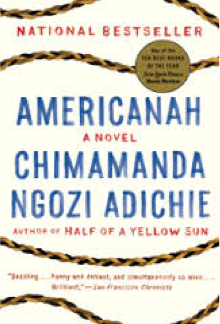
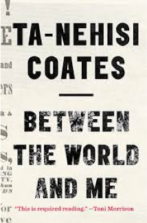
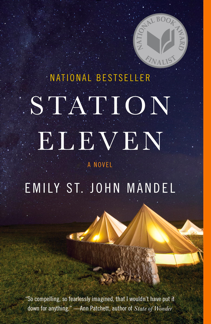
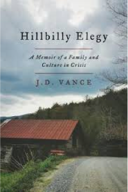
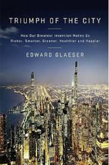
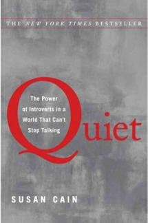
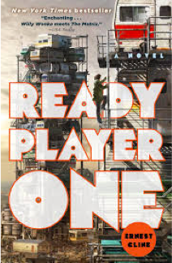
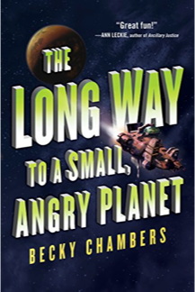
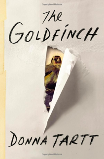
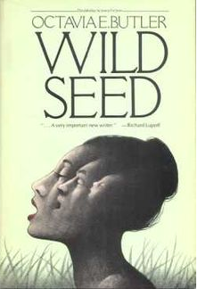

Top 10 books of 2016
Dec 20, 2016
It’s that time of year when everyone is putting together end-of-year listicles. Best new web frameworks of 2016, top 20 highlights, most interesting UX books of 2016 etc. One version of this trend that I always look out for is book lists - it’s interesting to see what other people are reading and get a few ideas for my own list.
So, in proper end of year spirit, here are my 10 favorite books that I read in 2016 in no particular order.
Americanah
Chimamanda Ngozi Adichie, Fiction

After reading Chimamanda Ngozi Adichie’s short work “We Should All Be Feminists”, I knew I had to read her full-length novels. Americanah centers around a man and woman from Nigeria who face challenges in the countries they leave Nigeria for. The narrative is packed with keen observations about race, culture shock, and American culture, and left me deeply engaged in the characters lives.
Between the World and Me
Ta-Nehisi Coates, non-fiction

This short memoir written by Atlantic writer Ta-Nehisi Coates seemed to be on everyone’s list this year, and for good reason. Coates looks deeply at the concept of race in America and its impact on American culture and history, as well as on the lives of black people. He artfully jumps between historical and personal examples, creating a personal, gripping narrative that should resonate with anyone who has experienced racism directly or who cares about the lives of people of color.
Station Eleven
Emily St. John Mandel, fiction

Emily St. John Mandel has four novels under her belt, and after reading Station Eleven I read her other three works in quick succession. Station Eleven is set in America after civilization is almost completely wiped out by a pandemic. The characters struggle to survive in the wake of the collapse, with Mandel artfully weaving the present with pre-collapse stories of the characters. This vivid descriptions of pre and post pandemic create a surprisingly beautiful narrative, rife with descriptions of the American landscape, a traveling symphony, and the fleeting nature of fame and fortune.
Hillbilly Elegy: A Memoir of a Family and Culture in Crisis
J.D. Vance, non-fiction

I read this memoir after hearing J.D. Vance interviewed on NPR, just as Trump was starting to pick up steam and everyone in the Bay Area reacted with confusion. Vance comes from a self-described hillbilly family, and provides a more nuanced look at the struggles of America’s white working class than what the media typically portrays. While most major network reporting this year tended to disregard the unique struggles of this community, Vance delves into his family’s history, challenges, and identity. A former Marine and Yale Law School graduate, Vance provides a bridge between the intellectual elite and the poor whites that make up a large portion of “Trump’s America”.
Triumph of the City: How Our Greatest Invention Makes Us Richer, Smarter, Greener, Healthier and Happier
Edward Glaeser, non-fiction

Edward Glaeser, an urban economist, responds to the myth that cities are dirty, crime ridden, expensive, and unhealthy by making a strong argument that urban environments are the healthiest, greenest, and richest places to live. He shows how urban residents benefit from city life, explores why cities like Detroit are struggling while others are thriving, and explains how west coast environmentalists have harmed the environment (this one was eye-opening, ask me about it sometime). He makes an impassioned argument for investing in our cities before everyone suffers the consequences. This book was packed with studies and examples that span the globe and the history of humankind.
Quiet: The Power of Introverts in a World That Can’t Stop Talking
Susan Cain, non-fiction

Did you know that at least one-third of the people you know are introverts? I strongly identify as an introvert, and fellow loners have been telling me to read this since it came out in 2012. Not only does Susan Cain do a fantastic job of explaining what introversion and extroversion is from a scientific and social standpoint, she argues that our extroverted society is greatly undervaluing introverts. This book makes a powerful argument to change this interaction for the benefit of everyone.
Ready Player One
Ernest Cline, fiction

Ready Player One is a light, fun read, set in a future beset with hardship but with really cool virtual reality. Taking place in 2044, most people live in poverty, and many are consumed with a virtual utopia called the OASIS. The teenaged main character has devoted his life to solving the 80s pop-culture puzzles left throughout the world by the OASIS creator, in the hopes of gaining the ultimate financial prize by being the first to unlock them. This book has a lot of tropes and is almost too easy to ready (ever hear of building suspense?), but was really engaging and provided an interesting look at a future with VR.
The Long Way to a Small, Angry Planet
Becky Chambers, fiction

This is the book I’ve been calling the “female Firefly”, mostly because it is set in space, is a bit whimsical and campy, and has even more strong female characters than Firefly did. The story is about a crew of “wormhole builders” on their way to an important job, hurtling through space in a patched-together ship. The nine alien and human crewmembers each have their own stories that get explored throughout the novel, from a Martian woman trying to escape her past to a tech who is in love with the ship’s AI. This is a very character driven story, and it was enjoyable to take a deep look at interpersonal relationships in the midst of futuristic tech and alien identities.
The Goldfinch
Donna Tartt, fiction

I’ve now read all of Donna Tartt’s novels, and I’m always captivated by her use of language and ability to create vivid characters. This story centers around a thirteen-year-old boy named Theo, who miraculously survives a traumatic museum accident that kills his mother. As the story follows him through his teenage years and into adulthood, it shows him clinging to a small, mesmerizing painting of a goldfinch that reminds him of his mother. This novel left me invested in Theo's struggles with love, loss, and search for meaning in art.
Wild Seed
Octavia Butler, fiction

Octavia Butler’s science fiction is unlike any other sci-fi I’ve ever experienced. I read Parable of the Sower back in high school and it made me realize that sci-fi isn’t all about flashy tech and futuristic predictions: it can be about what it means to be human, and the consequences of not holding that closely enough. Wild Seed is filled with magic, following a god-like entity named Doro who changes host bodies without regard for their life, and a shapeshifter named Anyanwu who can protect herself and heal others. The two characters travel from Africa to the New World, and Anyanwu deals with the control Doro has over her and his colonies.